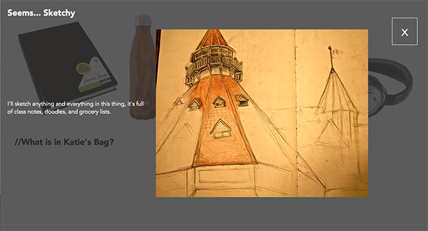
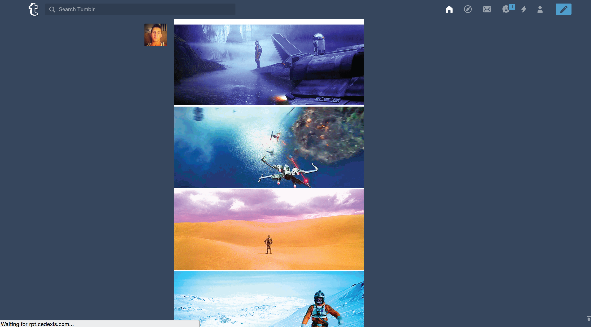
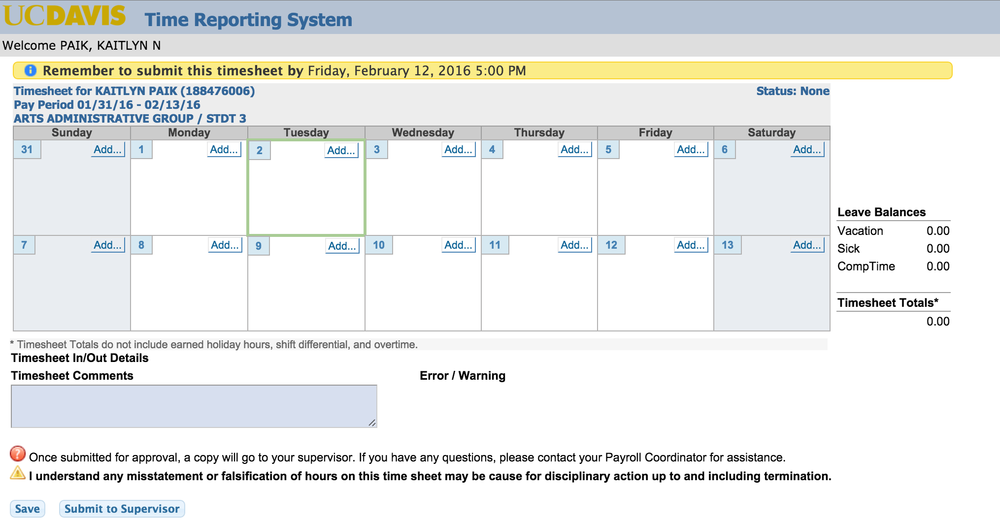
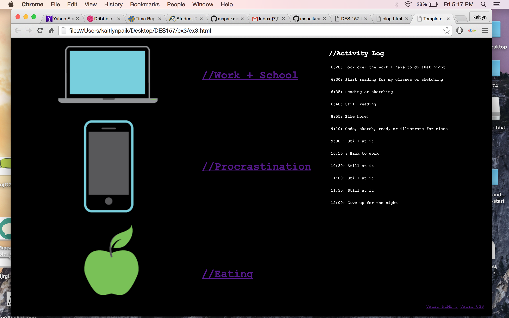

Pocket Full of Interface
For this exercise, I wanted to visually show how the objects I carry around tie in to who I am in real life. To do that, I photographed the items and applied a image trace effect to make them slightly less sharp/realistic and more cartoon like. This contrasts with the mostly unedited photos that slide down with the click. I wanted a very horizontally oriented interface, I initially tried animating the overlay so it slid horizontally, but it was much cleaner looking if it slid down from above.
Analysis of Tumblr Interface
Tumblr, Instagram, Facebook, many other visual-based social media applications share similar interfaces and one particular feature in common: the infinite scroll. While this method is an excellent choice that is visually compelling, it also has several disadvantages that are tumblr-specific. On sites like facebook and Instagram where most people interact with several hundred people they know personally, on tumblr, users are more likely to be following blogs that are interest or theme specific: photography, illustration, fan-dom, ect.
As a result, the infinite scroll gets annoying, seeing as there is no way for a blog user with differing interests to isolate or organize their posts on their scroll in to categories based on interests. Additionally, there’s no way to mark the position you left off at in the scroll, leading you to potentially have to rescroll through post you have seen in the past, which defeats the recreational novelty that most people associate tumblr with.
Most users on facebook and Instagram stalk, or look up people specifically outside of the infinite scroll, but that’s a relatively uncommon practice on tumblr, which really emphasizes the need for marking.
Web Based Form
My least favorite Web Based form has to be the time reporting sheet UC Davis uses for employees. There's no way to have a standard work schedule or saved form that you can make minor adjustments to so you have to manually input all the hours you work every two weeks. Additionally, visually, the form is very unappealing and outdated.
Time Is On My Side
For this project I really wanted to show the breakdown of how I spend my time, so I categorized all my activities into Procrastination, Food, and Work. In hindsight, there were some things I did that didn't neatly fit into those three categories and I should have done a fouth one as the assignment instructed (oops). As you hover over the names of the different topics, the activites appear and disappear in the activity log!